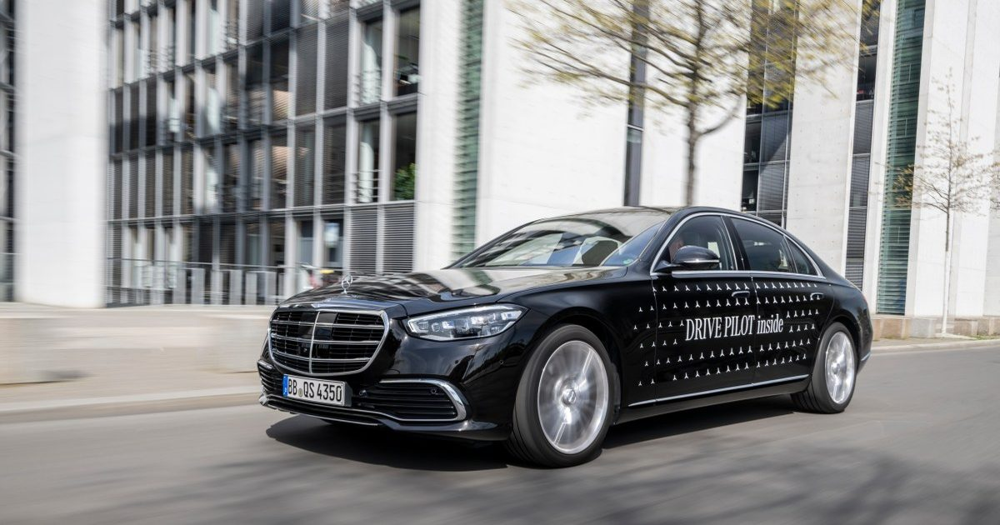

Федералы хотят, чтобы роботизированная ось сигнализировала «Я за рулем» с помощью ламп голубого цвета
После многих лет дебатов о том, как беспилотные автомобили должны рассказывать миру, что за рулем никого нет - мигающий текст, звуковые оповещения, пользовательские огни - федералы просто вмешались с одним ответом: голубой.
Национальная администрация безопасности дорожного движения выпустила предлагаемые изменения к Федеральному стандарту безопасности автотранспортных средств (FMVSS) № 108, в частности, переписав ...